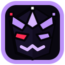

CLOWNHOUSE.IO
Belfry Pixel Sanctuary // Bayer 8×8 Stage
BELFRY SPIRE
┌── CLOWNHOUSE // SANCTUARY ───────────────────────────────────────┐
│ Manor Grid: 96×54 BAYER-8×8 Lanterns: 3 WISPS Eyes: ●● LIVE │
├──────────────────────────────────────────────────────────────────┤
│ [1] Oak Door ► Knock Three Times (16-bit bass thud) │
│ [2] Music Box [ PAUSED ] ▁▁▁▁▁▁▁▁ celesta loop │
│ [3] Belfry Sky ► Summon Lightning (stepped pixel bolt) │
│ [4] Waypoints [ 6 DOORS ] stage-select drawer │
└──────────────────────────────────────────────────────────────────┘
⚡ STAGE SELECT // CONNECTED SANCTUARIES
[ESC / 4]
Sweep torch over the manor • Click any window to flush the jester • Keys 1–4